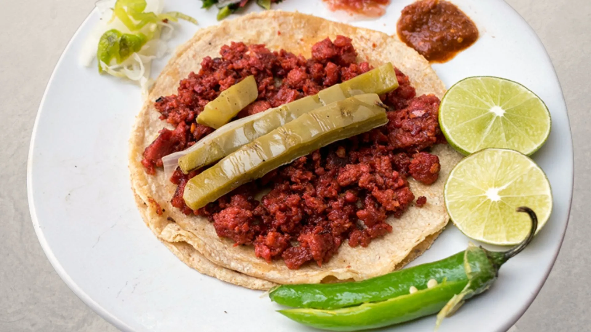

Menu
Antojitos Méxicanos
- Menu Completo
- Quesadillas
- Tlacoyos y Tacos
- Bebidas
Esta opción clásica y sencilla combina el queso derretido con una tortilla de maíz recién hecha, para crear una experiencia culinaria sencilla pero sabrosa.
Esta opción saludable y sabrosa combina el pollo desmenuzado con una tortilla de maíz recién hecha, sin queso para aquellos que buscan una opción sin lácteos.
platillo tradicional mexicano combina el sabor suave de los frijoles con el toque fresco y crujiente de los nopales, todo envuelto en una masa de maíz recién hecha y cubierto con queso y cilantro frescos
platillo tradicional mexicano combina el sabor suave de las habas con el toque fresco y crujiente de los nopales,
Tacos de suadero$18/C.U
El sabor de la carne de suadero es incomparable y se complementa perfectamente con la frescura del cilantro, la cebolla y el toque de limón que se le agregan.

Tacos de longaniza$18/C.U
Este taco es una opción perfecta para aquellos que buscan un sabor fuerte y picante en su comida.
Esta deliciosa opción combina el sabor suave y cremoso del queso derretido con la jugosidad del pollo cocido y desmenuzado.
Este platillo es una deliciosa combinación de carne molida de res, papas y zanahorias cocidas a la perfección
Esta exquisita opción vegetariana combina el suave sabor de la flor de calabaza cocida con el queso derretido y una tortilla de maíz recién hecha.
Deliciosa combinación de hongos frescos salteados con cebolla y especias, envueltos en una tortilla de maíz recién hecha y cubiertos con queso derretido.
Cada bocado es una mezcla perfecta de sabores y texturas que te sorprenderán gratamente.
Tacos de Bisteck$18/C.U
Este taco es una opción perfecta para aquellos que buscan una carne jugosa y llena de sabor. La carne de res se corta en trozos y se asa a la parrilla